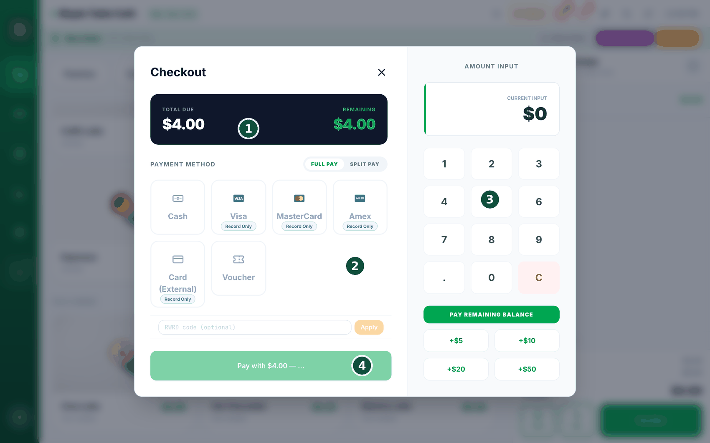
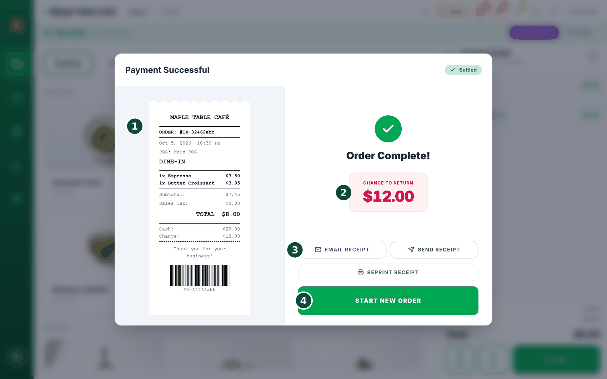
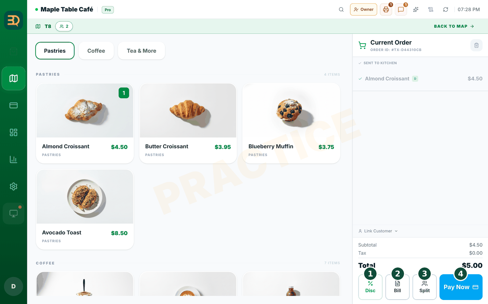
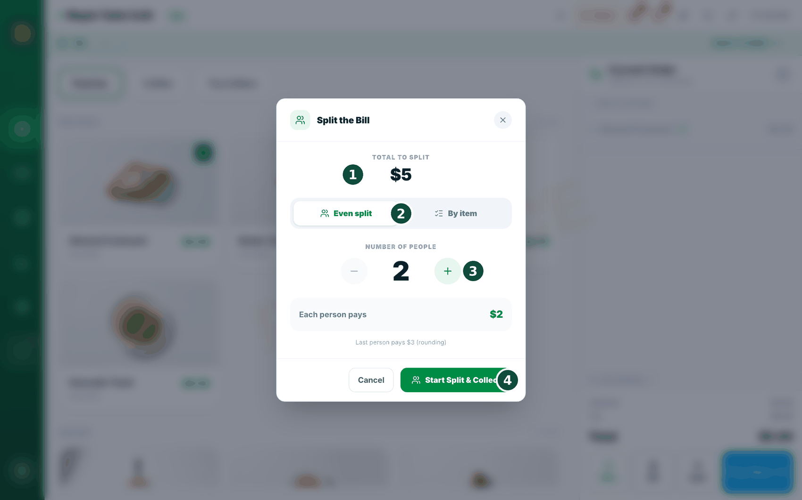
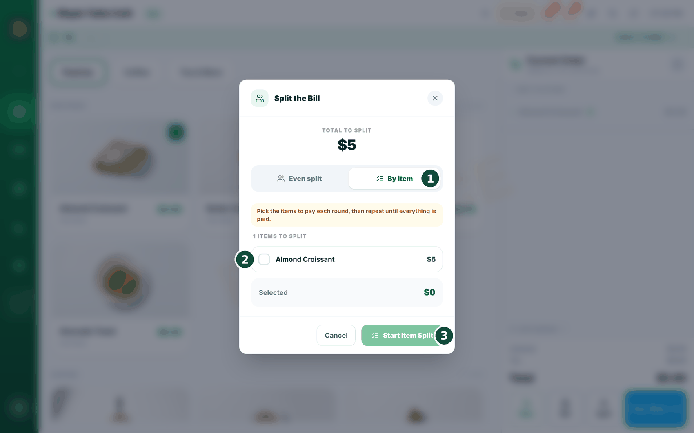
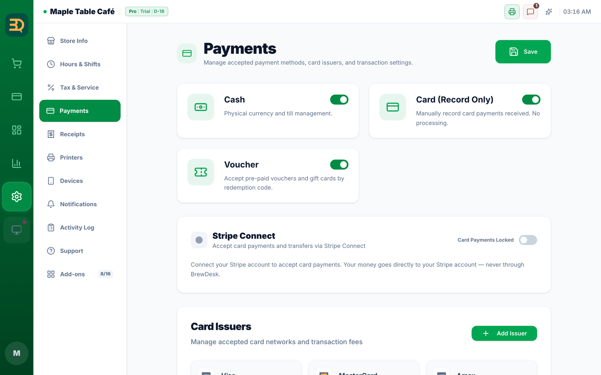

8Cobrar
Ahora la parte divertida: cobrar. Puede aceptar efectivo desde hoy. Puede aceptar tarjetas en cuanto vincule su propia cuenta de Stripe. BrewDesk nunca agrega una comisión a sus ventas con tarjeta.

- Termine el pedido y toque Pay Now (Pagar ahora). Se abre la pantalla Checkout.

- Para cobrar en efectivo, toque Cash (Efectivo). Escriba cuánto dinero le entrega el cliente. BrewDesk le muestra el cambio que debe devolver.
- Para cobrar con tarjeta: si hay un lector de tarjetas (terminal de Stripe) conectado, toque Card (Tarjeta). Si no, verá botones de marcas de tarjeta como Visa, MasterCard y Amex, además de Card (External) (Tarjeta (externa)); estos solo registran un pago con tarjeta que cobró en una terminal aparte (Record Only (Solo registro)). (Los pagos con lector necesitan primero su cuenta de Stripe vinculada; consulte el paso siguiente).
- Para aceptar tarjetas, vincule su propia cuenta de Stripe en Settings › Payments. La conexión es gratuita. En la misma pantalla puede activar o desactivar los métodos de pago Cash (Efectivo), Card (Record Only) (Tarjeta (solo registro)) y Voucher (Cupón).
- El selector Full Pay (Pago completo) / Split Pay (Dividir pago) en la parte superior de la pantalla de cobro: Full Pay (predeterminado) cobra todo el importe con un solo método; Split Pay es para cuando una persona paga una parte en efectivo y otra con tarjeta.
- ¿Necesita dividir una cuenta entre varias personas? Toque el botón Split abajo a la derecha de la pantalla de pedidos. Puede dividirla en partes iguales o por producto, y cada parte puede tener su propia propina. Consulte Dividir la cuenta justo debajo.

BrewDesk no agrega ninguna comisión a sus ventas con tarjeta, en ningún plan. Su dinero va directamente a su propia cuenta de Stripe. BrewDesk nunca se pone en medio ni se queda con una parte.*
* Usted paga directamente a Stripe su tarifa estándar; BrewDesk no agrega nada.
Dividir la cuenta
Cuando una mesa quiere pagar por separado, BrewDesk divide la cuenta por usted. Hay dos formas sencillas: dividirla en partes iguales entre las personas o dividirla por producto para que cada uno pague lo que consumió. Cada parte puede agregar su propia propina, y una misma persona puede pagar una parte en efectivo y otra con tarjeta.
En un pedido para comer en el local (servicio a mesa), envíe los productos a la cocina y luego toque Split entre los botones de abajo a la derecha de la pantalla de pedidos (Disc (Desc) · Bill (Cuenta) · Split · Pay Now (Pagar ahora)); no está dentro de la pantalla de cobro a la que llega con Pay Now. La división es para pedidos de mesa, así que el botón aparece una vez que se han enviado los productos de la mesa.
Dividir en partes iguales


- Toque Split y elija Even split.
- Indique el número de personas con los botones − y +. BrewDesk muestra Each person pays debajo. Toque Start Split & Collect.
- Ahora cobre una parte a la vez. La pantalla dice "Person 1 of 4". Cobre su efectivo o tarjeta y pasa a "Person 2 of 4", y así sucesivamente.
- Después de la última persona, toque Start New Order (Iniciar nuevo pedido): la mesa queda pagada y liberada.
Dividir por producto

- Toque Split y elija By item.
- Marque los productos que paga esta persona. BrewDesk los suma. Toque Pay Selected y cobre su pago.
- Repita con los productos de la siguiente persona hasta que el contador de "productos restantes" llegue a cero. El pedido se termina solo.
Dividir la cuenta en tres toques. Divida en partes iguales, por producto, o mezcle efectivo y tarjeta en la misma parte: BrewDesk hace las cuentas e imprime a cada persona su propio comprobante ("Split 1 of 4"). Sin calculadora ni discusiones en la mesa.
Es bueno saberlo: si reembolsa una parte, la propina se queda en la tienda (solo se devuelve el importe de los productos), y BrewDesk no le permite cerrar el día mientras una división esté a medio pagar.
Propinas en pedidos que cobra más tarde
A veces un pedido queda sin pagar y usted lo cobra al final del día. Si hay una propina de por medio, ahora BrewDesk le pregunta por ella antes de cobrar, para que una propina nunca desaparezca sin que nadie lo note.
Al cerrar, toque un pedido sin pagar y elija Settle unpaid order. El recuadro de la propina está en la parte superior de la pantalla de pago.
- Si el pedido ya tiene una propina, verá "Tip recorded on this order" con dos botones: Include tip o Exclude tip. Debe elegir uno; BrewDesk no cobrará hasta que lo haga.
- Si el pedido no tiene propina pero el cliente dejó una en su terminal de tarjetas, use Add a tip (Agregar propina). Escriba el importe y toque Apply (Aplicar).
- Si usa cuentas de personal, elija quién la recibe en Tip goes to. Es obligatorio: una propina sin nombre no le llega a nadie.
- Cobre como siempre. Toque Back to closing para seguir con el resto del día.
Redondeo de pagos en efectivo
Cash Payment Rounding se encarga de las monedas sueltas. En muchos países la moneda más pequeña es mayor que el último dígito de la cuenta: ya nadie lleva monedas de 1 centavo. Así que cuando un cliente que paga en efectivo debe 10.03, usted cobra 10.00 y deja pasar los 3. Ahora BrewDesk puede hacer ese redondeo por usted, solo en pagos en efectivo, y llevar un registro de cada moneda que dejó pasar.
Abra Settings › Payments y desplácese hasta Cash Payment Rounding. Solo el propietario de la tienda puede abrir la pestaña Payments, así que solo el propietario puede configurarlo. Empieza desactivado en todas las tiendas.

- Active Enable cash payment rounding.
- Escriba el Rounding increment: la moneda más pequeña que realmente maneja (0.05, 10, 100, la que corresponda en su país). Si lo deja en 0, el interruptor no hace nada, que es justo lo que le indica la ayuda debajo del campo.
- Elija la Rounding direction: Nearest (hacia arriba o hacia abajo, lo que esté más cerca), Round down (siempre a favor del cliente) o Round up.
- Mire la nota gris de abajo. BrewDesk conoce la práctica habitual de su país y se la indica: "Common practice in this country: round to 0.05 using Nearest (legally required)." Toque Apply (Aplicar) y completa por usted el incremento y la dirección.
- Toque Save (Guardar) en la parte superior de Settings.
Settings › Tax & Service (consulte Configurar sus impuestos).Redondee como la tienda de al lado, sin perder los centavos en sus cuentas. Configure la unidad de moneda una vez y cada total en efectivo caerá en una moneda que realmente tiene. Cada centavo redondeado sigue registrado, sigue en el recibo y sigue cuadrando en el cierre, así que su contador nunca tendrá que preguntar adónde fue el cambio suelto.
Temas relacionados
¿Necesita más ayuda?
Puede enviar un ticket de soporte desde la app en Settings › Support.